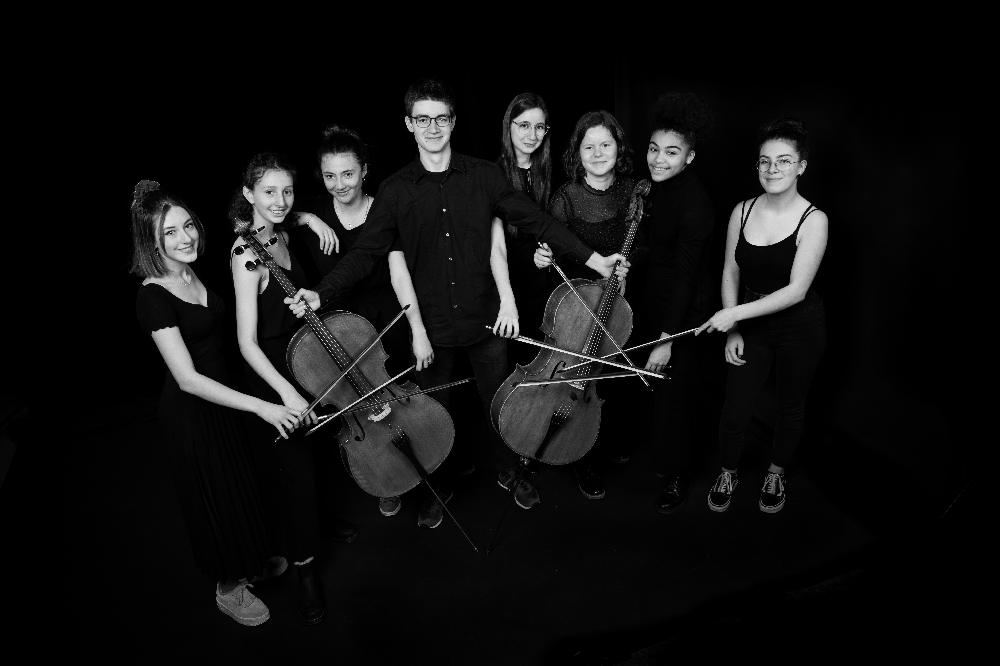

11 novembre 2020
Billets disponibles sur monbillet.ch
Bus 1, 2, 6, 8, 9 et 17 (Bel-Air) - 4, 9, 17 (Chauderon)
Train CFF, LEB (arrêt Chauderon)
Métro M2 arrêt Riponne, 5 min à pied
Parking du Centre, de la Riponne, du Palace
Pour plus de renseignements, visitez le site du Centre Culturel des Terreaux
 L‘ensemble des LimonCelli réunit 9 jeunes violoncellistes énergiques et talentueux, passionnés par la musique de tous genres. Dans cette première apparition en groupe, ils interprètent une sélection des meilleures chansons et compositions parmi les plus grands styles de musique tels que le Rock des années 80, le Funk, la musique latine et la musique romantique, convaincus que cette musique, dans sa diversité arrive à toucher, captiver et entraîner le public. Pour cela, les LimonCelli tirent de leur violoncelle des sons d’une grande variété pour vous offrir une expérience sonore surprenante.